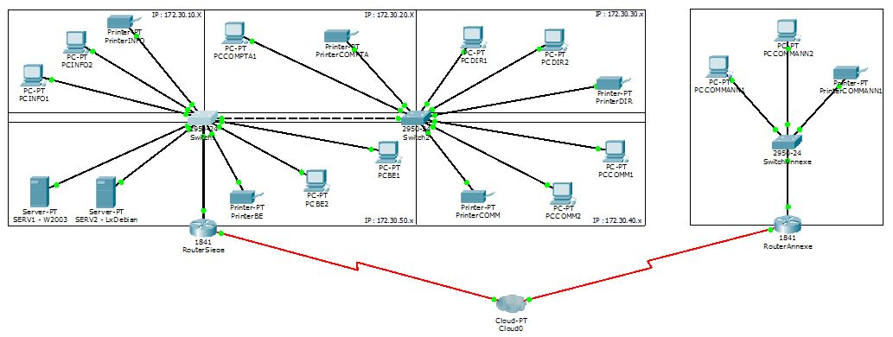
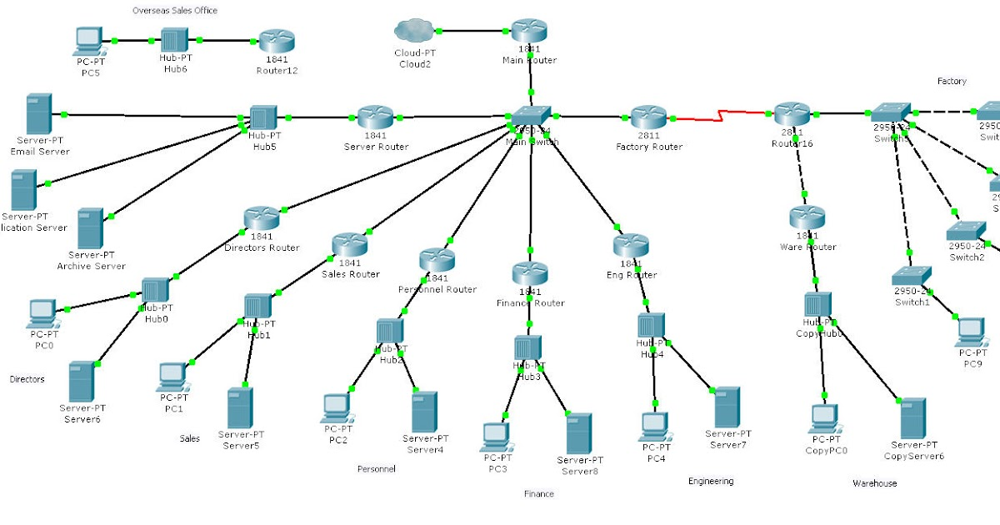

Galerie
Quelques images supplémentaires liées au projet.

Configuration des VLAN

Configuration d'un routeur

Topologie réseau complète
Ce projet consistait à configurer un réseau informatique complet avec différents équipements Cisco. J'ai appris à configurer des VLAN, des routeurs et des switches.
J'ai utilisé Cisco Packet Tracer pour créer et tester différentes topologies réseau, ce qui m'a permis de comprendre les concepts fondamentaux du routage et de la commutation.
Nous avons utilisé Cisco Packet Tracer pour simuler des réseaux, puis mis en place un petit réseau d'entreprise en configurant les routeurs, les adresses IP, les commutateurs, les serveurs web, etc.
Dans un deuxième temps, nous avons mis en place tout un ensemble de VLANs. Le but était, pour une entreprise, de créer plusieurs VLANs avec des droits différents sur des ports distincts.
Nous avons également eu recours à des switches de niveau 3 et configuré du routage inter-VLAN.
Enfin, nous avons réalisé un TP grandeur nature. Au lieu d'utiliser un logiciel de simulation, nous avions à notre disposition de véritables commutateurs de marques différentes. L'objectif était d'acquérir une polyvalence accrue et de maîtriser la configuration de ces derniers de manière efficace.
J'ai particulièrement apprécié la partie pratique de ce projet où j'ai pu configurer des équipements réseau réels. Cela m'a permis de mieux comprendre comment les réseaux fonctionnent dans la réalité, au-delà de la théorie.
J'ai aussi aimé travailler avec Cisco Packet Tracer car il offre une interface intuitive pour simuler des réseaux complexes.
Quelques images supplémentaires liées au projet.

